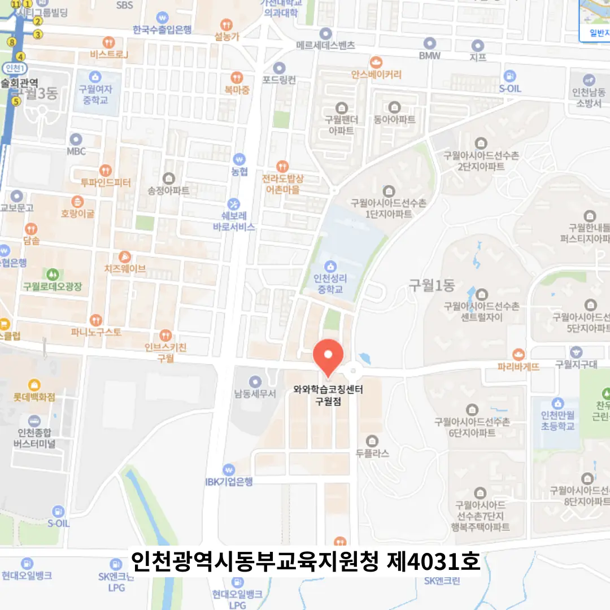

학부모님은 아이의 목표를 먼저 생각해요. 선생님은 교육 철학이 명확한 곳을 찾으라고 조언해요. 교실 환경은 학습 집중을 방해하지 않는지 확인해요. 주변 소음이 적은 구월동 지역은 조용한 분위기가 장점이에요. 교육 프로그램은 체계적으로 구성돼 있는지 살펴보아요. 상담 시 강사의 경험과 피드백 방식을 직접 들어보는 것이 도움이 돼요. 수업 시간표는 아이의 생활 리듬과 맞는지 검토해요. 마지막으로 비용 대비 효과를 비교해 보는 것이 현명해요
지역에 따라 학생들의 성향이 다르기 때문에 구월동의 교육 환경을 잘 이해하고 접근하는 것이 필요해요. 아이의 감정 상태를 세심하게 고려해서 피드백 시간을 충분히 확보해주는 구월동 고1 영어학원이 인기가 많답니다. 문장을 끝맺지 않고 연결사를 사용하여 자연스럽게 이어가는 무한 연결 구조로 글쓰기를 훈련하면 사고력이 깊어지는 효과가 있어요. 주변 구월동 고1 영어학원가 정보를 캐치해 보면 이러한 구조화된 사고 훈련을 중요시하는 경향이 강하다고 해요. 아이가 학습에 흥미를 느끼려면 정서적인 안정이 필수적이거든요. 그래서 선생님과의 유대감을 형성하고, 칭찬과 격려를 적절히 섞어가면서 지도하는 방식이 아이들에게는 큰 동기가 된답니다.
이 교육기관은 교재 외에 자체 보조자료를 체계적으로 정리해 주면서 학습 흐름을 시각화해요. 주요 대상은 기본 개념에 약점이 있는 초중고 학생이며, 맞춤형 커리큘럼으로 단계별 목표를 설정해요. 주 2회 진행되는 과학 실험 정리표 복습 덕분에 감점 없이 실력을 유지할 수 있고, 수업 중 아이와의 대화에서 학습 방향을 즉시 잡아주는 점이 큰 강점이에요. 중급A 과정은 월 31,200원, 중급B 과정은 월 62,400원으로 책정돼 있어 가성비가 뛰어나요. 이런 구성은 학부모가 비용 대비 효과를 직접 눈으로 확인할 수 있게 해요.
| 학원명 | 와와코칭센터 |
| 수강료 | 중급A 31,200원 | 중급B 62,400원 |
CURRICULUM
실전 문제 풀이 후에는 단순히 정답 확인을 그치는 것이 아니라 그룹 토의를 통해 다양한 해결 방법을 공유해요. 또한 교과서 문장 변형 문제를 풀며 문법적 유연성을 훈련하는데요. 이는 변형된 문제에도 당황하지 않고 대처할 수 있는 힘을 길러줍니다. 학생들이 서로의 생각을 듣고 토론하는 과정에서 논리적 사고력도 함께 자라나는 것을 느낄 수 있어요. 이런 과정을 통해 문제 해결력을 극대화하는 것이 우리 커리큘럼의 특징이에요.
많은 학생이 구월동 고1 영어학원 선택 단계에서 교육 철학과 강사진을 충분히 검토하지 않아 기대와 현실 차이를 겪어요. 등록 후에는 과도한 과제량으로 인해 학습 피로도가 상승하고, 스스로 관리하는 습관이 부족해요. 학습 관리 단계에서는 시간 분배가 미숙해 시험에서 집중력이 떨어지는 경우가 많아요. 이러한 실수를 줄이기 위해 단계별 체크리스트와 부모와의 정기 상담을 권장해요. 구월동 주변에서 이런 문제를 겪는 사례가 자주 보고돼요.
구월동 고1 영어학원은 학생들의 몰입 시간을 확보하기 위해 수업 전 집중 준비 활동을 도입해요. 내향형 학생에게는 조용한 학습 공간과 개인 과제 시간을 제공하고, 외향형에게는 그룹 토론을 배치합니다. 수업 편차를 최소화하기 위해 교사는 사전 학습 진단을 통해 수준에 맞는 난이도를 조정합니다. 전반적인 수업 질 향상을 위해 교재는 최신 교육 과정과 연계된 자료를 사용합니다. 학습 목표는 구체적인 행동 목표로 설정하고, 가장 어려운 과제를 먼저 해결하도록 유도합니다. 이러한 전략은 학생 개별 특성을 고려한 맞춤형 교육을 실현하는 데 큰 도움이 됩니다. 학생 개개인의 피드백을 기록해 두고, 다음 수업 때 이를 반영함으로써 지속적인 성장 궤도를 유지합니다. 이러한 전략은 장기적인 학습 습관 형성에 핵심적인 역할을 수행한다고 할 수 있어요.
초등학교 5학년으로 과제 수행은 성실하지만 창의적 접근이 부족한 아이에게 적합해요. 틀린 부분을 표시하지 않아 스스로 오류를 인식하게 하는 훈련이 도움이 돼요. 자기주도 학습을 촉진하고 피드백을 적극 활용하도록 설계돼 있어요
한 학부모는 선생님이 아이의 이야기를 끝까지 들어주는 모습에 큰 감동을 받았다고 전했어요. 다른 학부모는 개념 설명이 간결하고 핵심만 짚어줘 부담 없이 수업에 참여할 수 있었다고 말했어요. 또 다른 학부모는 교실 벽면에 차분한 색감이 공부 분위기를 부드럽게 만들어 집중력이 향상됐다고 평가했어요. 학부모 상담 시 꼼꼼한 안내 덕분에 신뢰가 쌓였고, 지속적인 소통이 학습 효과를 높였다고 강조했어요. 학생은 매 시험 전 맞춤 예상 문제를 풀면서 실전 감각을 익혔고, 점수 상승을 체감했어요. 다른 수강생은 피드백을 통해 약점을 정확히 파악하고 보완하는 과정이 재미있었다며, 스스로 성장하는 즐거움을 느꼈다고 했어요. 전체적으로 구월동 고1 영어학원 분위기가 친절하고 따뜻해 아이가 자주 찾게 된다고 전해요